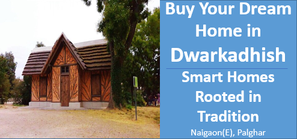

Buy Your Dream Home in Dwarkadhish:Smart Homes, Rooted in Tradition.
Holistic Lifestyle Integration
Gurukuls promoted a balanced approach to life—mind, body, and spirit. By integrating elements such as yoga, meditation, Ayurvedic wellness, and sustainable living, modern buildings can offer a holistic lifestyle for residents. This type of lifestyle helps people manage stress, stay healthy, and maintain mental well-being.
-Example:Yoga and meditation spaces within the building can provide opportunities for residents to unwind, improving mental clarity, and overall happiness.
Promotes Community and Social Cohesion
- Benefit: Stronger Sense of Belonging:
Gurukuls were community-based, with a focus on mentorship, collaboration, and group learning. In a modern setting, this sense of community can be fostered by shared learning experiences, cultural events, and collaborative spaces for residents. Social cohesion is promoted when people engage in communal activities like festivals, wellness programs, and cultural performances.
- Example:A community center hosting workshops, events, or festivals where people of different backgrounds interact and learn from each other creates stronger community bonds
Encourages Sustainable Living
- Benefit: Eco-friendly and Sustainable Practices:
Gurukuls often embraced natural living, surrounded by nature and using eco-friendly practices. Incorporating sustainability into modern buildings—through features like solar energy, rainwater harvesting, organic gardens, and green building materials—can appeal to environmentally-conscious residents.
- Example:Naigaon is home to a growing number of schools and colleges, making it an appealing location for families with children. Additionally, the presence of healthcare facilities has improved, offering residents easier access to medical care.
Health and Wellness Focus
- Health and Wellness Focus:
The emphasis on physical health (through activities like yoga) and mental health (through meditation and spiritual practices) in Gurukuls can be extended to modern buildings. Amenities like fitness centers improve residents’ overall well-being.
Intergenerational Connections
-Benefit: Respect for Elders & Mentorship
Gurukuls were places where elders were respected and played a role in guiding the younger generation. A modern building that integrates this concept can help foster stronger relationships between generations. Spaces dedicated to elderly residents, mentorship programs, and intergenerational activities can create a more inclusive and supportive community.
-Example:A mentorship program where older residents can teach younger ones traditional arts, crafts, or life skills, creating strong bonds between generations.
Increased Property Value and Unique Selling Proposition (USP)
-Benefit: Attracting a Niche Market
Integrating the concept of a Gurukul can create a unique selling proposition (USP) for the property. In a competitive real estate market, offering a lifestyle that combines modern luxury with traditional values can attract discerning buyers looking for a more meaningful way of living. This can translate into increased demand and property value.
-Example:Marketing the apartment complex as a "Modern Gurukul Lifestyle" can differentiate it from typical residential buildings, attracting buyers who value wellness, culture, and sustainability.
Attracting Health-conscious and Family-oriented Buyers
-Benefit: Appealing to a Broader Demographic
Modern buildings that embrace the Gurukul philosophy will likely appeal to health-conscious families, professionals, retirees, and spiritual seekers who prioritize well-being, sustainable living, and community involvement. This could create a diverse, balanced community.
-ExampleFamilies with children may appreciate the educational and holistic development opportunities offered by the building, while wellness-focused individuals may be drawn to the health amenities and serene living environment.
Modern Convenience with a Focus on Tradition
-Benefit: Blending the Best of Both Worlds
The combination of modern amenities (such as smart home technology, high-speed internet, and luxury features) with traditional values creates a balanced and fulfilling living experience. Residents can enjoy the convenience of modern living while also engaging with time-tested practices that promote well-being and personal growth.
-ExampleSmart homes with incorporate traditional elements like Vastu-compliant layouts or natural materials (wood, stone) for a harmonious living space.
Conclusion
By integrating Gurukul-inspired principles into modern buildings, developers can provide a lifestyle that appeals to the growing demand for holistic living. The combination of wellness, education, community, sustainability, and spirituality not only enhances the residents' experience but also provides a unique and attractive living environment. These benefits position the building as more than just a place to live but a sanctuary that nurtures personal growth, family bonding, and cultural enrichment.
Contact us
+91 72088 43484 / +91 72088 43487
kkcreateandbiuld@gmail.com
Radha Nilaya, Plot No. 164/2,
Bapane Village, Chandrapada Road,
Naigaon (E) - 401208,
Maharashtra, India.